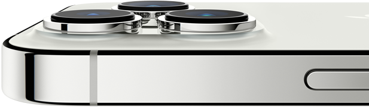

<div
  class="camera-intro"
  v-offset-rect="isLoaded"
  v-view-flag="windowBottom"
  v-camera-sticky="windowBottom"
>
  <div class="shared-container text-container">
    <p class="text">
      我們的<strong> Pro 相機系統</strong
      >迎來歷來最大升級。配備<strong>創新突破的硬體</strong>，可捕捉更多精彩細節。<strong>超有智慧的軟體</strong>，帶來全新的拍照與拍片技巧。更有<strong>速度超乎想像的晶片</strong>，實現這一切可能。<strong
        >你的拍攝方式，從此大不同。</strong
      >
    </p>
  </div>

  <picture class="image-container">
    <source
      srcset="../../../../../public/images/section-camera-camera-system-large.png"
      media="(min-width: 1068px)"
    />
    <source
      srcset="../../../../../public/images/section-camera-camera-system-medium.png"
      media="(min-width: 734px)"
    />
    <source
      srcset="../../../../../public/images/section-camera-camera-system-small.png"
    />
    
  </picture>
</div>
